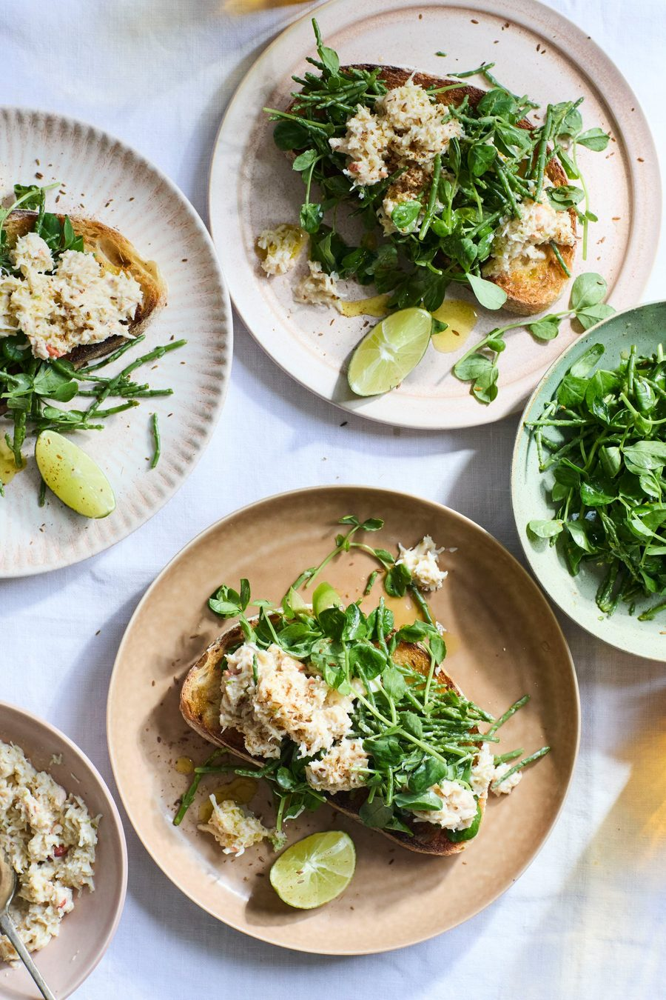

Crab on toast with lime, cumin and pickled samphire

Finely shave the peel off one of the limes in long, wide strips, then cut the fruit into wedges. Finely grate the zest of a second lime, to get a teaspoon, then juice it to get a tablespoon and a half (if need be, juice the third lime to top it up to that much juice).
Mix the samphire, shaved lime peel, lime juice, squashed garlic clove and a quarter-teaspoon of cumin in a medium bowl, then leave to pickle for one to two hours.
In a medium bowl, mix the crab with the soured cream, grated lime zest, an eighth of a teaspoon each of cumin and salt.
Toast the bread until crisp and golden brown on both sides, lightly rub one side of each slice with the remaining half garlic clove, then drizzle a half-teaspoon of oil over each slice.
Lift out and discard the lime peel and garlic from the samphire pickle, then stir in the remaining tablespoon of oil, the chilli and the sprouting herbs. Divide the pickle between the toasts, then top generously with the crab mix. Sprinkle with a pinch of salt and the remaining cumin, and serve with the lime wedges on the side.